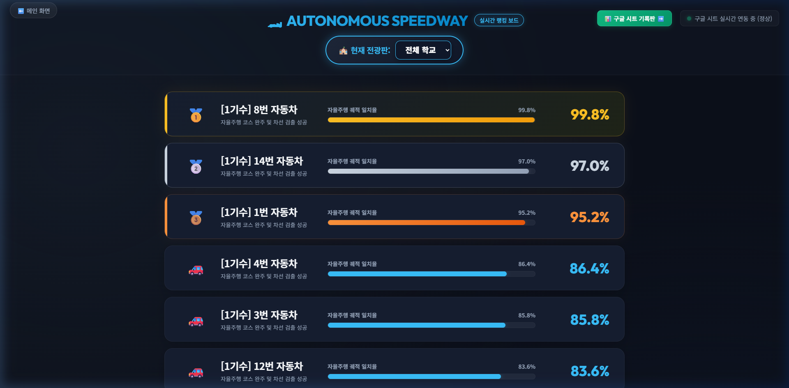
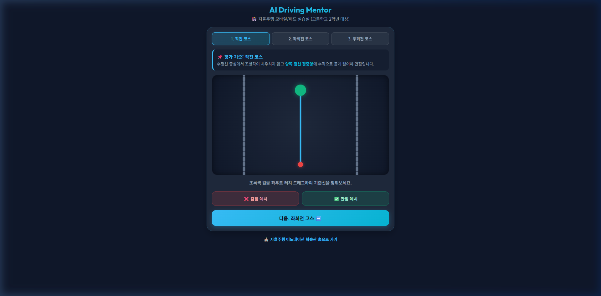
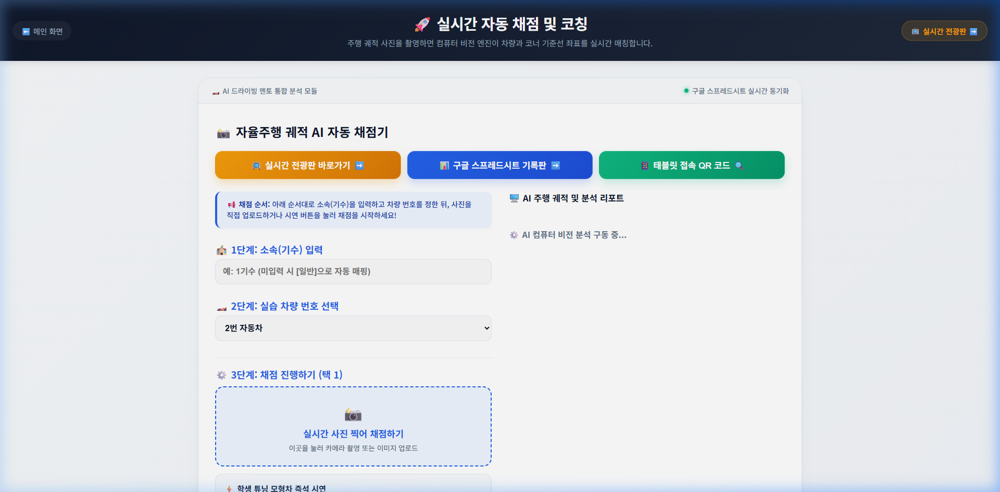
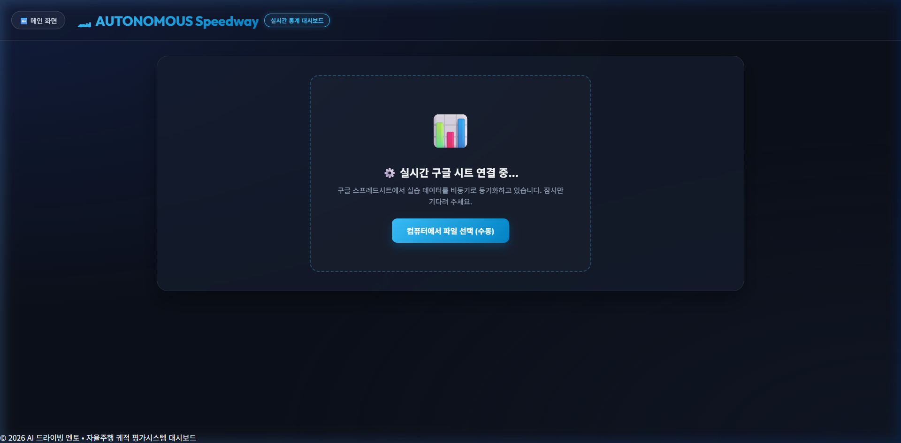

💡 본 가이드는 고등학교 [인공지능 모델학습] 교과에서 교사가 자율주행 교육을 원활하게 운영할 수 있도록 돕는 단계별 안내서입니다. 별도의 프로그램 설치 없이 웹 브라우저만으로 수업 준비 ➔ 학생 접속 ➔ AI 채점 ➔ 결과 다운로드의 4단계 과정을 직관적으로 운영할 수 있습니다.
🛠️ 1단계: 수업 준비 (교실 화면 및 교사용 기기 세팅)
수업 시작 전 교실 스마트 TV(또는 스크린 프로젝터)와 교사용 스마트 기기(태블릿 또는 노트북)에 화면을 미리 준비합니다.
🖥️ 1. 교실 TV 실시간 전광판 켜두기
- 메인 화면에서 [교실 TV 실시간 전광판]을 선택하거나, tv.html 링크를 교실 대형 화면에 송출합니다.
- 키보드의 F11을 누르면 화면 전체를 가득 채우는 풀스크린 모드로 몰입도 높은 교실 환경을 조성할 수 있습니다.

▲ [1단계 화면설계] 교실 대형 화면(스마트 TV)에 송출하는 실시간 전광판 (tv.html)
📱 2. 교사용 실시간 AI 자동 채점기 실행
- 교사의 태블릿 또는 스마트폰에서 메인 화면의 [실시간 자동 채점 및 코칭] 버튼을 누르거나, evaluation.html 화면을 실행합니다.
- 학생들이 실습 트랙에서 주행시킨 모형차의 주행 궤적을 즉시 촬영하여 AI 컴퓨터 비전으로 자동 채점할 준비를 마칩니다.
🏎️ 2단계: 학생 접속 (QR 코드 실습실 입장 및 사전 설문)
학생들의 스마트 기기(태블릿/스마트폰)를 활용하여 실습 플랫폼에 접속하고 사전 역량 진단을 실시합니다.
🔗 QR 코드를 활용한 간편 접속 안내
- 교실 TV 전광판 상단에 비치된 학생 접속용 QR 코드를 학생들에게 안내합니다.
- [사전 설문 QR]: 대형 돋보기 모달로 확대 띄워 학생 전원이 사전 자율주행 5대 역량 자가진단 평가를 제출하도록 지도합니다.
- [학습실 접속 QR]: 사전 설문 완료 후 학생들이 개별 기기로 가상 실습실에 접속하여 트랙 영상 시청 및 데이터 어노테이션 실습을 진행하도록 합니다.

▲ [2단계 화면설계] 학생들이 스마트 기기로 접속하는 조향 제어 가상 실습실 (study_student.html)
📸 3단계: AI 채점 (컴퓨터 비전 궤적 분석 및 실시간 음성 코칭)
학생들이 어노테이션(데이터 가공)을 거쳐 이식한 모형차의 실제 주행 궤적을 AI 비전 기술로 정량 분석합니다.
🔍 AI 자동 채점기(evaluation.html) 평가 절차
- 1. 소속 정보 입력: 평가 대상 학급 및 기수 정보를 확인합니다.
- 2. 차량 번호 선택: 채점할 학생 조의 모형차 번호(1~20번)를 드롭다운 목록에서 선택합니다.
- 3. 주행 사진 촬영: [실시간 사진 찍어 채점하기] 버튼을 눌러 모형차의 주행 트랙 코스를 카메라로 촬영합니다. (시연 수업 시에는 번호별 예시 이미지 버튼 활용 가능)
💡 AI 정밀 분석 및 음성 코칭: 인공지능이 기준 주행선과 차량 위치 사이의 물리적 거리를 픽셀 단위로 정밀 측정하여 정확도를 산출하며, 맞춤형 음성 피드백(TTS)으로 학생에게 개선점을 즉시 안내합니다.

▲ [3단계 화면설계] AI 컴퓨터 비전 주행 궤적 정밀 분석 및 실시간 음성 코칭 채점 (evaluation.html)
🏆 4단계: 결과 다운로드 (실시간 순위표 확인 및 구글 시트 데이터 수합)
모든 주행 평가 기록과 설문 데이터는 구글 스프레드시트에 실시간 자동 누적되어 수업-평가 일체화를 실현합니다.
📊 실시간 명예의 전당 전광판 및 데이터 관리
- 실시간 명예의 전당 송출: 교실 TV 전광판에 차량별 완주 최고 정확도 순위표가 실시간 집계되어 학생들의 성취 동기를 고취합니다.
- 구글 스프레드시트 자동 누적: 교사는 전광판 상단의 [구글 시트 기록판 열기]를 클릭하여 전체 누적 데이터를 실시간 확인합니다.
- 평가 데이터 다운로드: 구글 시트의
[파일] ➡️ [다운로드] ➡️ [Microsoft Excel(.xlsx)]을 통해 학생들의 과정 중심 수행평가 및 생활기록부 작성 근거 자료로 즉시 활용할 수 있습니다.
- 사후 설문 및 성장 분석: 수업 종료 전 [사후 설문 QR]을 통해 학생들의 역량 성장 곡선과 수업 만족도를 종합 분석합니다.

▲ [4단계 화면설계] 차량별 최고 정확도 꺾은선 그래프 및 종합 평가 대시보드 (dashboard.html)
📋 [참고] 표준 교수·학습 과정안 (1차시 50분 기준)
| 단계(시간) |
교수·학습 활동 내용 |
활용 소프트웨어/기능 |
| 도입 (10분) |
비전 센서 인식 오류 영상 시청, 자율주행 제어 사전 역량 설문조사, 학습 목표 제시 및 플랫폼 안내 |
전광판 사전 설문 QR |
| 전개 1 (15분) |
어노테이션 개념 학습, 가상 주행 도로(직진·곡선)에 따른 조향각 조절 방법 학습 및 데이터 가공 실습 |
학습 데이터 만들기
(study_teacher.html) |
| 전개 2 (10분) |
가공한 어노테이션 데이터를 자율주행 모형차에 이식하고 실제 트랙 위에 올려 주행 시험 |
실제 실습 트랙 및 모형차 |
| 전개 3 (10분) |
교사 스마트 기기로 주행 궤적 촬영, 실시간 AI 비전 정밀 채점 및 음성 코칭 확인 |
실시간 자동 채점기
(evaluation.html) |
| 정리 (5분) |
구글 시트에 누적된 기록을 교실 TV 전광판으로 확인, 사후 설문조사를 통한 학습 성장도 분석 |
교실 TV 실시간 전광판
평가 대시보드 및 설문조사 |
⬅️ 메인으로 돌아가기